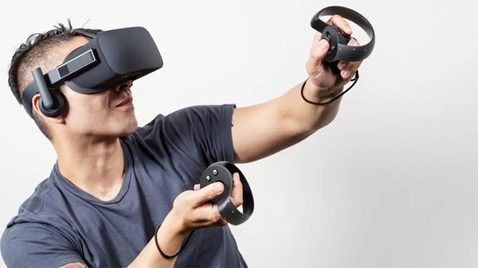
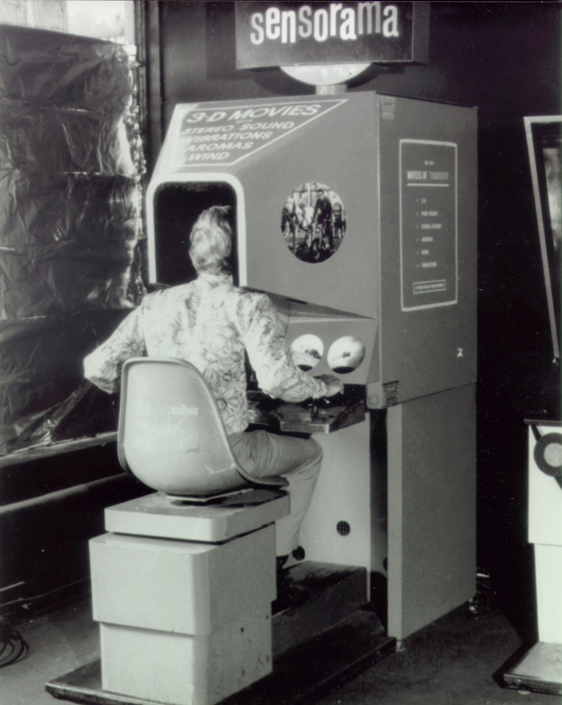
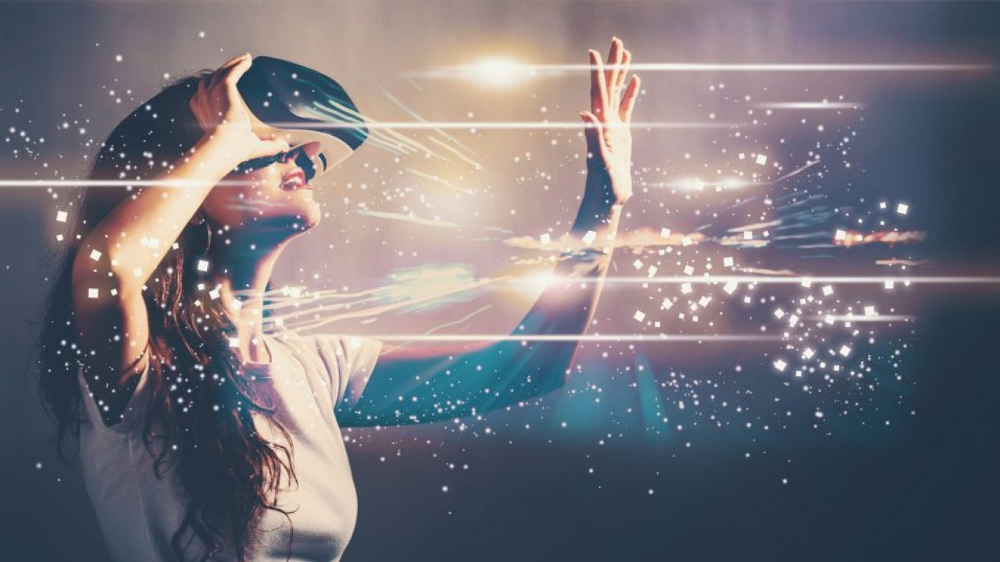
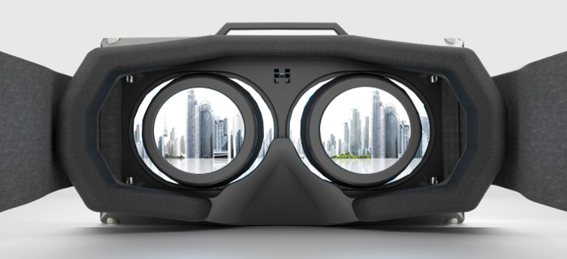

Realidade Virtual e Realidade Aumentada

O que é realidade virtual ?
Realidade virtual é como o nome já indica, um ambiente virtual no qual o usuário pode se inserir como se estivesse mesmo ali, mas tudo não passa de um sistema computacional. A tecnologia induz efeitos visuais e sonoros, permitindo total imersão no ambiente simulado virtualmente. O usuário pode interagir ou não com o que vê ao seu redor, dependendo das possibilidades do sistema utilizado. Ao longo dos anos e com a evolução da tecnologia, a realidade virtual ganhou nuances diferentes. Hoje, por exemplo ela tem como base displays estereoscópica, que servem como o meio pelo qual o usuário se conecta com o mundo virtual. A realidade virtual, em sua forma mais corriqueira, funciona através de estímulos visuais e auditivos. É comum o uso de headsets que cobrem completamente os olhos e orelhas, privando o usuário de ouvir e ver estímulos externos. Projetos como o PlayStation RV, da sony, prometem transportar completamente o indivíduo para dentro do jogo, com imersão total, tanto visual como auditiva. Nesse tipo de interface de realidade virtual é possível olhar para todos os lados sem precisar interagir com o controle, apenas virando o rosto para os lados. O headSet da Sony também inclui a opção de usar fones de ouvido para imersão mais completa.
O que é realidade aumentada ?

O primeiro ponto a ser esclarecido quando perguntamos o que é realidade aumentada é que ela é muito diferente da realidade virtual. Esta diz respeito a um ambiente de imersão criado por meio de ferramentas computacionais no qual o usuário realiza determinadas tarefas. Um bom exemplo de realidade virtual é o The Sims. A realidade aumentada designa a interação entre ambientes virtuais e o mundo físico. Um bom exemplo de realidade aumentada são as etiquetas QR Code em pontos turísticos de cidades.
Através do aplicativo leitor deste tipo de etiqueta instalado em tablet ou smartphone e com conexão à internet, pode-se ter acesso a uma espécie de guia virtual, que indica os locais aos quais o turista deve ir (inclusive traçando a rota para chegar até o local) e, ao chegar, mostrar a história, curiosidades, opções de passeio e tudo mais o que for pertinente. Diante disto, não é necessário ir muito longe para imaginar porque a realidade aumentada está tão em alta em diversos campos, incluindo o marketing e a publicidade. A realidade aumentada também é conhecida por “realidade expandida” e “realidade ampliada”.
Agora que você já sabe o que é realidade aumentada, provavelmente deve estar se perguntando como ela funciona. Simples: através de um software, um marcador no mundo físico e do GPS. A etiqueta QR corresponde ao marcado no mundo físico, o app leitor da etiqueta corresponde à porta de entrada ao software que fornece as informações ao usuário e o GPS funciona como o 'olho' deste software, pois é ele quem indica o local do usuário no mundo físico.
História da Realidade Virtual e da Realidade Aumentada

Depois de inúmeras invenções anteriores, finalmente chega a vez da realidade virtual e realidade aumentada nascerem, ou não. Tudo começa com o britânico Charles Wheatstone, que criou óculos estereoscópicos que usavam espelhos na frente dos olhos com uma pequena angulação na lente.
O efeito criado é que duas imagens lado a lado, sejam desenhos ou fotos, ficavam sobrepostas, criando a ilusão de volume e imersão. Mas ainda era cedo para aparecer alguma coisa acessível nesse nível. Publicado em 1935, o conto de ficção científica "Os Óculos de Pigmalião", de Stanley Weinbaum, descreve um par de óculos que traz um mundo surreal que combina hologramas com sons e cheiros como se fosse um projetor individual.
Já na década de 60 entramos com o sensorama, que parecia um fliperama e trazia uma mistura de cadeira que se mexia, óculos com visor, alto-falantes e até odores para simular a experiência. O cientista ainda patenteou uma ideia chamada máscara teleférica, um item individual com imagens em três dimensões em cor ou não que dominavam a visão periférica do usuário, criada pelo cientista Morton Heilig.
Os anos 60 ainda foram palco de dois avanços importantes. No campo teórico, o lendário Douglas Engelbart, responsável pelo mouse moderno, também idealizou que a gente podia usar um monitor para exibir visualmente informações que estavam em um computador.
Isso começou então a ser aplicado aos poucos. Em 1961, engenheiros da Philco criaram o Headsight, um projeto de estímulo visual e reconhecimento de objetos. A ideia era usar esse sistema para mover uma câmera remota, e ele foi usado até em treinamentos militares e de voo. Quatro anos depois, Ivan Sutherland inventou o The Ultimate Display. Após o primeiro passo dado por Sutherland, logo após começaram a surgir mais pesquisas e o desenvolvimento de sistemas voltados para a realidade aumentada, ou realidade virtual como era mais conhecido na época.
Em me ados dos anos 70, mais precisamente em 1975, Myron Krueger, um artista americano, desenvolveu o “Videoplace”, um sistema capaz de detectar qualquer tipo de movimento realizado pelo usuário, criando assim uma completa realidade virtual. “Altamente inovador para época, o laboratório ‘‘Videoplace” como era chamado, foi outro ponto importante na origem do que conhecemos hoje por Realidade Aumentada.
Em 1985, ex-funcionários da Atari resolveram investir na área sozinhos, já que a empresa quebrou depois de uma crise. A VPL Research é a companhia que oficializou o termo Realidade Virtual e ainda lança vários periféricos na área.
Em 1990, Tom Caudell, criou um sistema baseado na realidade aumentada para auxiliar mecânicos da empresa Boeing. Após colocarem uma espécie de óculos, os usuários eram auxiliados pela ferramenta para encontrar conexões de cabos e fios corretas nos motores das aeronaves, isso vem a facilitar muito a vida dos mecânicos, que economizavam tempo ao não precisarem ler manuais enormes dos aviões. É importante frisar que foi Tom Caudell, o primeiro pesquisador a utilizar o termo Realidade Aumentada.
Anos antes, a NASA começou a pesquisar gráficos em 3D para treinar pilotos de missões espaciais tripuladas. O resultado foi o Virtual Interface Environment Workstation, ou VIEW, com óculos, luvas e até uma roupa completa com sensores para medir desempenho e sinais vitais. A realidade virtual começou sair dos laboratórios nos anos 90 e virou moda, especialmente nos games. O grupo Virtuality passou a fabricar dispositivos e arcades com a tecnologia, inclusive multiplayer. Em 1993, a Sega anunciou um headset para o Mega Drive e até alguns jogos, mas ele nunca passou da fase de protótipo. Em 1995, a Nintendo apresentou o ambicioso Virtual Boy, com um formato bem fora do convencional e com gráficos 3D.
Principais empresas da área

Enfim, ao presente, com a Sony saindo na frente. O Project Morpheus era uma lenda anunciada em 2014, mas que já tava em desenvolvimento pelo menos uns 3 anos antes. Ele foi renomeado como PlayStation VR no ano seguinte e finalmente saiu em outubro de 2016.
Sony garante que 1 milhão de unidades foram vendidas até junho de 2017 e uma segunda versão foi anunciada em outubro. O design ganhou pequenas melhorias, inclusive na entrada do fone de ouvido, e reduz a bagunça de cabos.
O terceiro grande competidor dos tempos modernos é o HTC Vive. Feito pela fabricante taiwanesa em parceria com a Valve, ele é considerado o melhor headset atual em desempenho e conforto. Ele se aproveita de câmeras e sensores instalados ao redor do jogador para maior movimentação em cenários e traz um controle bem intuitivo.
Nos últimos 2 anos, a concorrência cresceu. Outra das mais recentes revoluções na área foi em 2013, com o Freefly VR. O grande diferencial desse headset era a capacidade de usar no lugar do visor um smartphone posicionado na horizontal, servindo de tela. Esse produto não foi tão bem-sucedido assim, mas abriu as portas para muitos projetos parecidos.
A Google entrou no mercado com dois produtos interessantes. O primeiro, de 2014, foi o Cardboard, que tornou o VR acessível a todos, já que é nada mais que um case de papelão. O segundo é o Daydream, de 2016, bem mais elaborado, compatível com vários dispositivos e já na segunda geração.
A Samsung começou em 2015 com o Gear VR, que só funciona com aparelhos da linha Galaxy a partir do Note 5 e S6. Fabricantes como Lenovo, ASUS e até o Facebook já estão embarcando nessa onda também.
A Nokia foi pelo caminho inverso e lançou uma câmera que grava em 360, a OZO, mas já descontinuou o projeto depois de 2 anos. A GoPro, que já teve a história contada por aqui, também embarcou nessa com o suporte para gravação Omni. E a Microsoft também está nesse caminho com um projeto ambicioso. A Mixed Reality é uma mistura de realidade virtual com realidade aumentada, em uma experiência totalmente inovadora.
Áreas da aplicabilidade RV

A realidade virtual, de modo geral, pode ser aplicada em cinco áreas específicas: jogos e entretenimento, comunicação à distância, simulação e treinamento, tele presença e visualização (Grimes, 1991). Contudo, a todo momento surgem novas aplicações nas mais variadas áreas do conhecimento e de maneira bastante diversificada, em função da demanda e da capacidade criativa do homem. Em muitos casos, a RV vem revolucionando a forma de interação homem-máquina, principalmente em sistemas complexos.
Na prática, a realidade virtual possui um vasto campo de utilização, cenários e eventos com recursos visuais que já fazem parte do presente. Um arquiteto pode montar seus próprios ambientes virtuais usando apenas microcomputadores e programas de desenvolvimento de ambientes virtuais. Por exemplo, na elaboração do projeto de um escritório é possível a visualização do ambiente sob diversos ângulos, permitindo que o usuário passeie por entre móveis e veja detalhes da construção antes mesmo que a primeira parede seja levantada (Penteado, 1995); ou na assessoria a venda de casas e apartamentos a clientes (Dupont, 1994).
Áreas da aplicabilidade RA

A Realidade Aumentada, atualmente, ainda é vista mais frequentemente no exterior. Empresas brasileiras, contudo, já realizam experiências bem-sucedidas no uso desta tecnologia. Algumas construtoras, por exemplo, já conseguiram simular as construções edificadas apenas apontando os celulares para os terrenos, ajudando consumidores em suas tomadas de decisão. As possibilidades do uso da Realidade Aumentada têm como limite somente a criatividade. Ela pode ser usada, inclusive, no entretenimento, para criação de jogos ainda mais interativos, como foi o caso do estrondoso sucesso do Pokémon Go.
Para as empresas, esta tecnologia tem sido muito usada por varejistas no setor de móveis e decoração, permitindo que clientes vejam como o produto vai ficar em sua casa antes mesmo de irem até a loja. Pode ser um novo sofá ou mesmo a pintura de uma parede.
Apesar das incontáveis aplicações possíveis e dos avanços no setor nos últimos anos, a tecnologia de Realidade Aumentada ainda está engatinhando no que tange a experimentação e aprovação dos usuários. As empresas que desejam investir na AR devem, portanto, concentrar seus esforços em entender a melhor forma de interagir com consumidores através da tecnologia, e não somente desperdiçar seus esforços e recursos no desenvolvimento desenfreado de aplicativos.
Impacto Social da RV e RA no mundo
Estamos diante de uma série de revoluções que esse tipo de tecnologia poderá nos trazer. Inicialmente, tendemos a identificar impactos somente em áreas extremamente próximas da Realidade Virtual. Ou seja: melhoria nos jogos, experiências com filmes, novas formas de conhecer espaços como museus, estádios, etc.
Se projetarmos para o futuro, podemos pensar no impacto no dia a dia das pessoas com informações relevantes sobre lugares, eventos, pessoas, entre outros. Você poderia deixar de fazer uma viagem para participar virtualmente de algum evento, poderia trabalhar quase 100% do tempo em casa e se reunir com as outras pessoas através da realidade virtual, entre inúmeros outros. Existem também, em desenvolvimento para uso conjunto com a realidade virtual, roupas táteis que tornariam as experiências ainda mais incríveis e tangíveis para o intelecto humano.
Outras aplicações que já vemos agora também serão muito melhoradas. Jogos com qualidade e precisão incríveis, filmes imersivos em ambientes de 360 graus, simulações de parques de diversões, museus, e outros espaços, interações reais entre com guias “how-to” facilitando o aprendizado de uma série de tarefas difíceis de se aprender anteriormente.
E obviamente, a VR abre um espaço para a evolução da educação de maneira nunca antes vista. Se substituirmos a experiência de uma aula comum e presencial de hoje, por um dispositivo que permitisse milhares de pessoas participarem de aulas, cursos, treinamentos, com muito maior profundidade, sem a necessidade de saírem de suas casas ou até mesmo das futuras salas de aula, teremos mais uma das inúmeras revoluções.
Claro que existem muitas limitações apresentadas pela tecnologia hoje que tornam difícil de imaginar que chegaremos muito rápido aos patamares citados acima. As tecnologias atuais são, em sua grande maioria, formadas por grandes dispositivos (óculos) que dificilmente conseguiríamos usar por muito tempo; há um problema ainda grande com o enjoo pelo uso da realidade virtual; temos inúmeras limitações com baterias, entre vários outros aspectos.
Independente das limitações que encontramos agora é inegável a importância que essa tecnologia terá no futuro. Vimos um lampejo disso com a explosão do Pokémon GO em muito pouco tempo e os impactos sociais que ele causou. Ficam ainda inúmeras dúvidas de como será o futuro com essas tecnologias.
Por fim, para tentarmos visualizar na “prática” como serão as vidas no futuro com essas novas tecnologias, o curta Uncanny Valley ganhou muita repercussão por projetar um futuro um tanto apocalíptico dessas tecnologias.
Curiosidades
A imersão que os óculos Rift proporciona é muito alta, ela é gerada da seguinte maneira: Seus visores estereoscópicos emitem duas imagens diferentes, uma para cada olho. É por isso que a sensação não é a mesma de simplesmente encarar uma TV de perto. Muito pelo contrário, essa divisão de imagem faz com que o jogador se sinta dentro daquele ambiente, inclusive com a sensação real de distanciamento dos objetos e cenário.
Além dessa imersão gráfica, os óculos possuem três componentes capazes de sincronizar os nossos movimentos com os dos games. Dessa forma, além da imersão visual, o jogador tem a sensação de estar no pleno controle de seu personagem.
Essa simulação da realidade é tão poderosa que consegue enganar o nosso cérebro, fazendo com que ele “interprete” aquele ambiente como se fosse real. Apenas a ação de caminhar é feita pelo controle, e já que o jogador está parado e andando ao mesmo tempo para o nosso cérebro, ele acaba se confundindo e em algumas pessoas pode causar náuseas e tonturas.Já que a imersão é muito grande, existem pesquisas para usar o VR em tratamentos psicológicos como fobias e preconceitos.
Tendências

Os desenvolvedores de AR e VR serão vistos trabalhando na adição de funcionalidades cognitivas e inteligentes em seus aplicativos. Uma tecnologia de IA (inteligência artificial), como a visão computacional, que permite aos computadores ver as coisas através de uma câmera e compreendê-las, se tornará uma parte importante das operações de AR para identificar e rotular objetos que estão presentes no campo de visão do usuário. Espera-se que esses recursos se tornem mais capazes e sofisticados com a inclusão de algoritmos de aprendizado de máquina.
Os filtros Instagram e Snapchat, que usamos hoje, são aplicativos que fazem uso de uma combinação de tecnologia AR e AI. A popularidade nesta tecnologia e outras aplicações com a funcionalidade de aprimoramento de imagem não vai cair em 2019.
Com a RV, estamos tentando criar um ambiente virtual e colocar as pessoas lá, e nos próximos anos, o ambiente, assim como as pessoas, se tornarão mais inteligentes. Para os jogadores que usam VR, eles terão dificuldade em jogar e derrotar seus oponentes, pois o sistema se tornará mais inteligente e se adaptará e reagirá com base nos estilos de jogo dos indivíduos.
Vídeo - Resumo Geral
O conteúdo foi resumido para melhor entendimento, acesse aqui o arquivo de pesquisa da nossa Equipe!